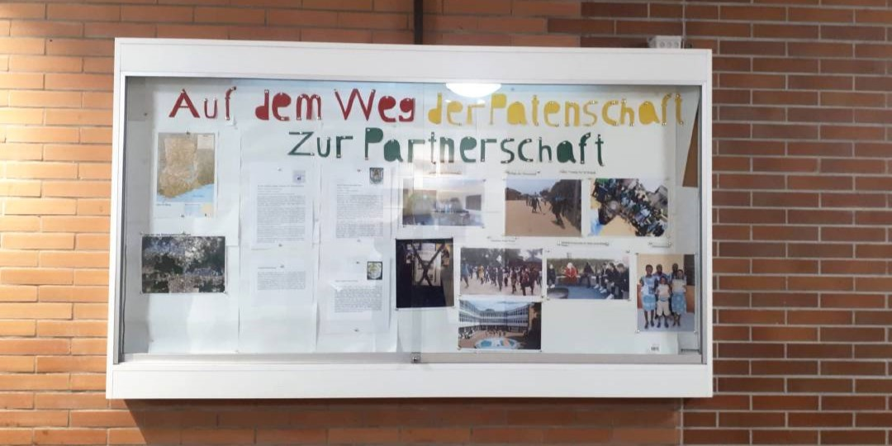
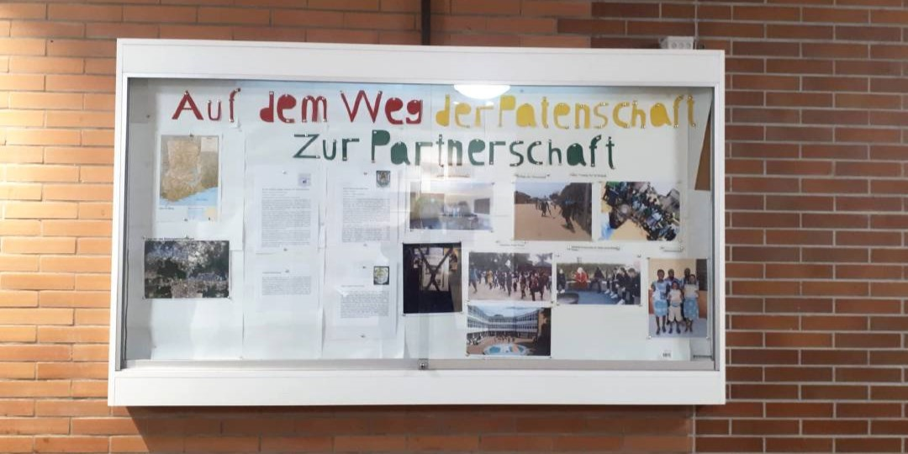
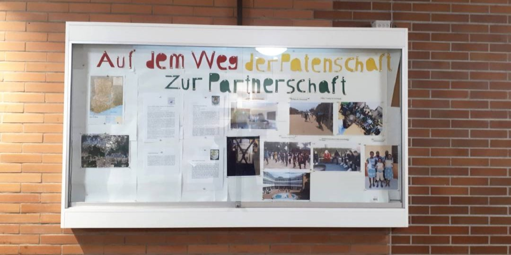
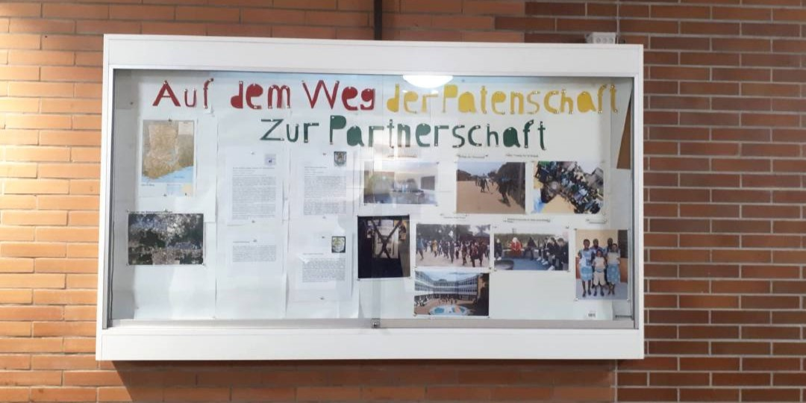

 


Aktuell sammeln wir alte und kaputte Kabel ein, die wir gemeinsam mit den Schweinfurter Organisationen "People4Future" und "Agenda2030" zum Recyceln geben.
Das durch diese Aktion gesammelte Geld kommt unserem Projekt, dem Bau einer Solaranlage für die St. Luke's School in Ghana, zugute.
Gerne können Sie am 13. Mai von 10- 15 Uhr Ihre kaputten Kabel auf dem Schweinfurter Marktplatz abgeben.
Diese Aktion findet im Rahmen der "Zukunftswoche Mainfranken" statt.
 Solarprojekt
Solarprojekt  Kunstprojekt
Kunstprojekt